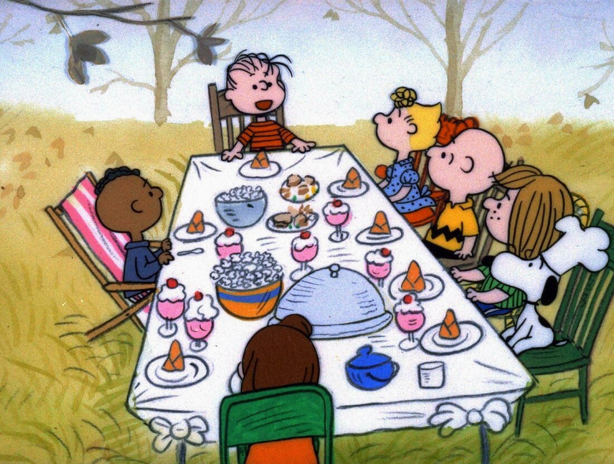

A Charlie Brown Thanksgiving's opening scen starts with Lucy encouraging Charlie to kick a football. She then takes the football away as Charlie is about to kick it, before making a comment about how some traditions always stay the same.
Charlie and Sally were planning to go their grandmother's house for Thanksgiving, however Charlie gets a call from Peppermint Patty saying her dad is out of town and she has invited herself to spend Thanksgiving at the Brown's house. Peppermint Patty then invites Marcie and Franklin to go Charlie Brown's house for Thanksgiving even though Charlie isn't having dinner there nor can he cook anything except "maybe toast". Linus then suggests having a Thanksgiving for friends before Charlie and Sally need to leave for their grandmother's house. Snoopy and Woodstock are recruited to help.
Snoopy brings and sets up a pig pong table and chairs. Charlie Brown, Snoopy, Woodstock, and Linus make a Thanksgiving dinner that consists of toast, popcorn, jelly beans, sundaes, and pretzel sticks.
When Peppermint Patty, Marcie, and Franklin arrive, the group says a prayer before Snoopy serves the meal. Peppermint Patty who expected a traditional Thanksgiving meal is angered by the lack of traditional dishes and yells at Charlie Brown. Charlie Brown then gets upset and leaves the table. Marcie asked Peppermint Patty if she thought she was being to hard on Charlie Brown, and asks Peppermint Patty if Charlie invited her or if she invited herself. Realizing she was wrong, Peppermint Patty asks Marcie to appoligize to Charlie for her. Marcie agrees but Peppermint Patty ends up appoligizing to Charlie directly.
After Peppermint Patty apalogizes, Charlie Brown realizes that he and Sally are late for dinner at their grandmother's house and calls her to let her know the situation. His grandmother then invites all fo his friends to join them for dinner.
Back at Snoopy's doghouse, Snoopy and Woodstock make a traditional Thanksgiving dinner. They break the wishbone, with Woodstock getting the bigger peice, before splitting a pumpkin pie.